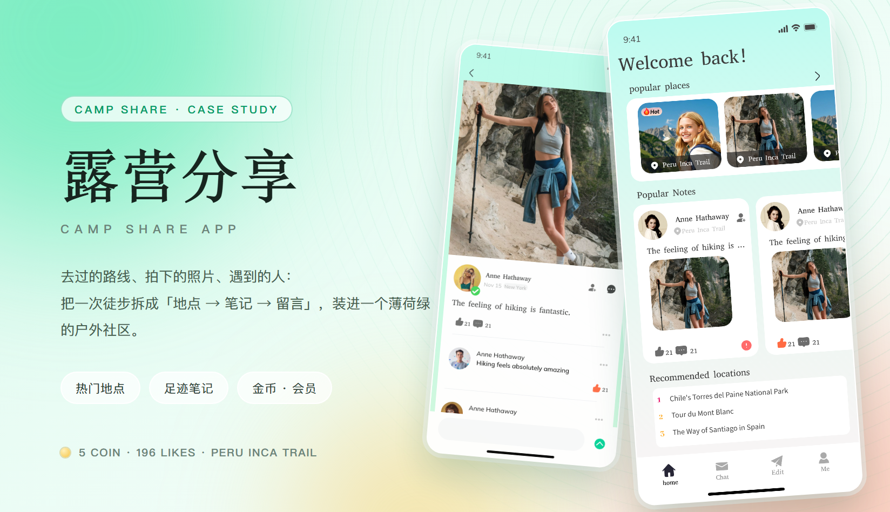
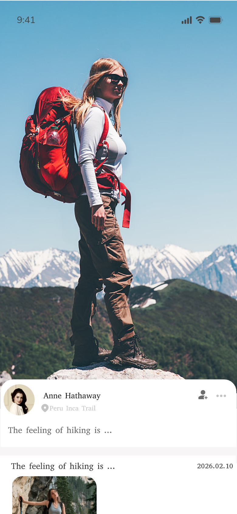
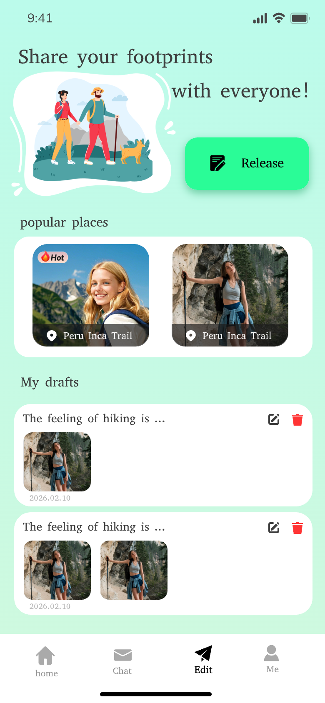
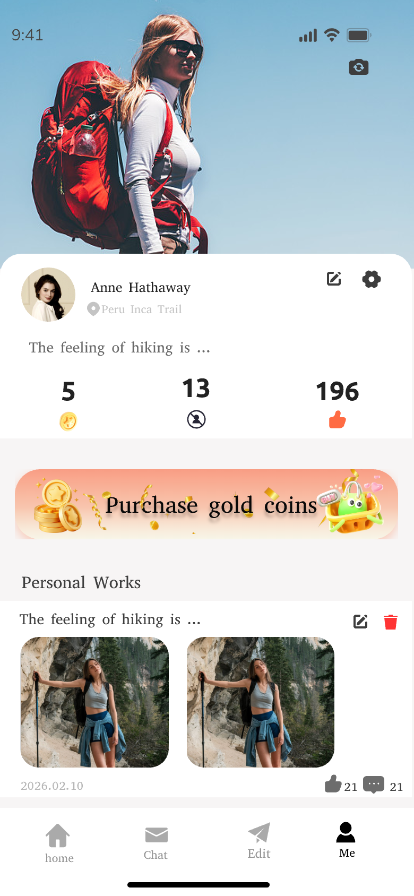
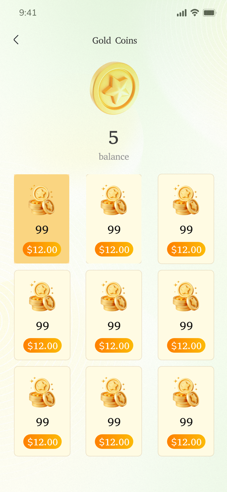

露营分享 · 户外足迹社区 App
一个户外社区的首页要同时回答三个问题：去哪、别人怎么走、还有什么值得去。这次没有加功能，只是把三件事分别交给三种容器——横滑给地点、双列给笔记、文字列表给榜单；再把一次徒步的完整过程（选地点 → 看足迹 → 留言 → 攒金币）串成一条动线。视觉取户外的颜色：薄荷绿铺底，翡翠绿只给主操作，珊瑚红只给点赞，金币黄只给会员。
主视觉

项目背景
海外市场 · 户外社区
这款 App 服务的是「走完一段路想说两句」的人：有人走完 Inca Trail，回来只想把照片和路线留给后来者；也有人只是刷到别人拍的雪山，想知道那到底是哪。旧版首页把热门地点、笔记、榜单全塞进一条按时间排的信息流，三件事互相打断——找路线的人被笔记淹没，想看图的人被榜单截断。
重做没有加功能，只是把三件事重新排了位置：地点用横滑，笔记用双列，榜单用文字列表。剩下的难点于是变成两个很具体的工艺问题——照片上的字怎么压才不挡人，以及那篇「写了一半的笔记」到底去哪了。
设计策略
三种容器，一条动线
- 首页三段式，一屏回答三个问题：Welcome back! 下面先给 popular places 横滑（一次露出 2.5 张，右边缘留半张暗示还能滑），再给 Popular Notes 双列笔记，最后给 Recommended locations 榜单（1 / 2 / 3 名次牌直接写在左边）。
- 笔记卡固定五个位置：头像 + 昵称、地点、标题、1:1 方图、底部点赞与评论。图片上除了右上角一个角标以外不放任何文字；标题最多一行，超出省略；地点名用 12px 灰色小字紧跟昵称，不换行。
- 详情页把「图 → 人 → 字 → 互动」压成一列：大图占上半屏，作者卡做成白色圆角卡「骑」在图片下沿，正文、点赞、评论依次往下，评论输入固定在底部。
- 发布不做空白编辑器：顶部是插画 + 一句 Share your footprints with everyone! + 一颗 Release 主按钮，正下方直接就是 My drafts 草稿箱，每条草稿给标题、缩略图、日期和编辑 / 删除两颗图标。
- 金币单独成一屏：余额放最上面（大字 + balance），下面 3 × 3 套餐网格，选中格整块加深、价格胶囊变实心，其余留白，让「买多少」一眼可比。
部分界面截图
整套交付 · 这里列出 6 屏：首页 / 动态详情 / 他人主页 / 发布 / 个人主页 / 金币购买
这个 App 同样是按整站交付的，下面 6 屏只是其中一部分，全部来自设计稿原图。同一批导出里另有一版首页（第 7 张），保留作对照，没有进正文。
挑这 6 屏是因为它们各自回答一个不同的问题——内容怎么分三层（首页）、一条足迹长什么样（动态详情）、这个人去过哪（他人主页）、写一半的东西放哪（发布与草稿）、自己攒了多少（个人主页）、钱怎么花（金币购买）。






视觉语言
薄荷绿 · 翡翠绿 · 珊瑚红 · 金币黄
薄荷绿 #d9f8ec 铺满整屏，是纸；翡翠绿 #22e39a 只给「按下去会发生事」的地方——Release 主按钮、Tab 选中、发送；珊瑚红 #ff5a4e 只给点赞与删除，全屏只有这两处会出现暖色；金币黄 #f6c445 严格留在金币、余额与会员横幅里。标题走衬线（Welcome back! / Gold Coins），正文回到系统无衬线，一屏里只用一个衬线标题做对比，其余靠字重分层次。形状上卡片 20–28px 圆角、图片圆角比卡片小一档、按钮全部胶囊、阴影极浅——户外实拍本身已经够重，界面要往后退。地点名统一做成压在照片底部的深色胶囊（📍 Peru Inca Trail），位置固定在左下，长名字截断。
遇到的问题与解决
1 个最关键的取舍：一屏塞三件事
问题首页要同时放热门地点、笔记和榜单，三块都想抢第一眼，往下滚两屏就散了。
解决用三种不同容器区分层级，而不是靠字号和分隔线：地点横滑（一次露 2.5 张，右边缘留半张暗示可滑）、笔记双列方图（可以无限刷）、榜单单行文字（一眼扫完）。三块之间统一 24px 间距、块标题统一衬线小字，用户靠容器形状就知道自己在看第几层。
从设计到交付
3 步 · 定薄荷绿、定三种容器、对双端
-
1 · 概念 · 一条「足迹」串起地点与人
先定气质：薄荷绿底 + 衬线标题 + 实拍大图，读起来像一本旅行杂志而不是一个社交软件。用首页与动态详情两屏打样，确认「照片在前、界面退后」这条底线。
-
2 · 制作 · 先定三种容器，再铺全站
把横滑、双列、榜单三种容器在首页跑通，再往外铺：动态详情、他人主页、发布（含草稿）、个人主页、金币购买；金币、地点胶囊、底部 Tab 收成一套图标与组件规范。
-
3 · 交付 · 组件、标注与走查
交付组件 Variant 与页面清单，和开发一起走查 iOS / Android：长屏照片在 2x / 3x 下的裁切、薄荷绿在 OLED 上的偏色、长地点名与长留言是否顶破卡片，逐项确认。
交付内容
这次做了什么